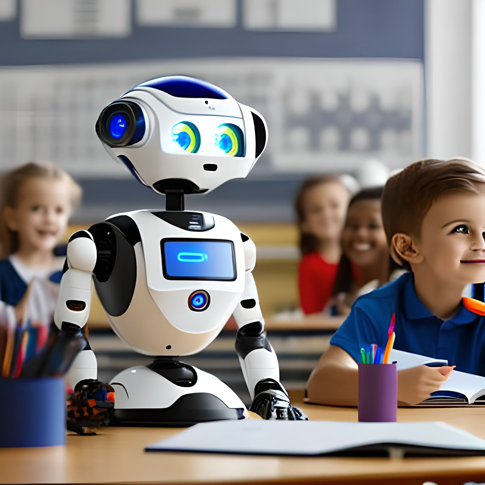

Robots in the classroom and S.T.E.A.M. projects
There are numerous benefits of using educational robots in the classroom and in S.T.E.A.M. (Science, Technology, Engineering, Arts, and Mathematics) projects.
Here are some of the key benefits:
- Enhancing learning experience: Educational robots provide an interactive and engaging way for students to learn. They can help make abstract concepts more tangible and real by allowing students to see how theoretical concepts apply to real-world scenarios.
- Encouraging creativity: Educational robots provide a platform for students to use their creativity in designing and building robots, and then programming them to perform specific tasks. This can help students develop their problem-solving skills and encourage them to think outside the box.
- Developing coding and programming skills: Educational robots often require coding and programming to operate, providing students with the opportunity to learn coding and programming skills in a fun and engaging way.
- Enhancing teamwork and collaboration: Many educational robots are designed to be used in groups, encouraging teamwork and collaboration among students.
- Developing S.T.E.A.M. skills: Educational robots can be used in a variety of S.T.E.A.M. projects, allowing students to develop skills in science, technology, engineering, art, and mathematics simultaneously.
- Preparing for future job market: As robotics and automation become increasingly prevalent in the workforce, exposure to educational robots in the classroom can prepare students for future careers in fields such as engineering, robotics, and computer science.